Home e página de produto, no computador e no celular, lado a lado com as quatro referências e com o blueprint da Brushed Paws.
4 concorrentes × 4 telascapturas Playwright, 20/10/2026mockups renderizados em 390 e 1280 px
01Por que estas quatro lojas
Doyobest
2.026 anúncios ativos
a de maior escala medida no nicho
observado
MilaGift
393 ativos, 75% no ar
a mais estável e a mais leve
observado
Companion Archive
437 ativos
referência de identidade editorial
observado
Turn Me Royal
119 mil visitas por mês
a de mais tráfego medido entre as 5
observado · SimilarWeb
CritérioCritério: sinal de escala (anúncios ativos, tráfego medido e sobrevivência), não preferência visual. Pet Lovers Custom ficou de fora do comparativo por ser vestuário com tamanho e por pesar 20 MB.
02Home no computador
DoyobestMODELAR
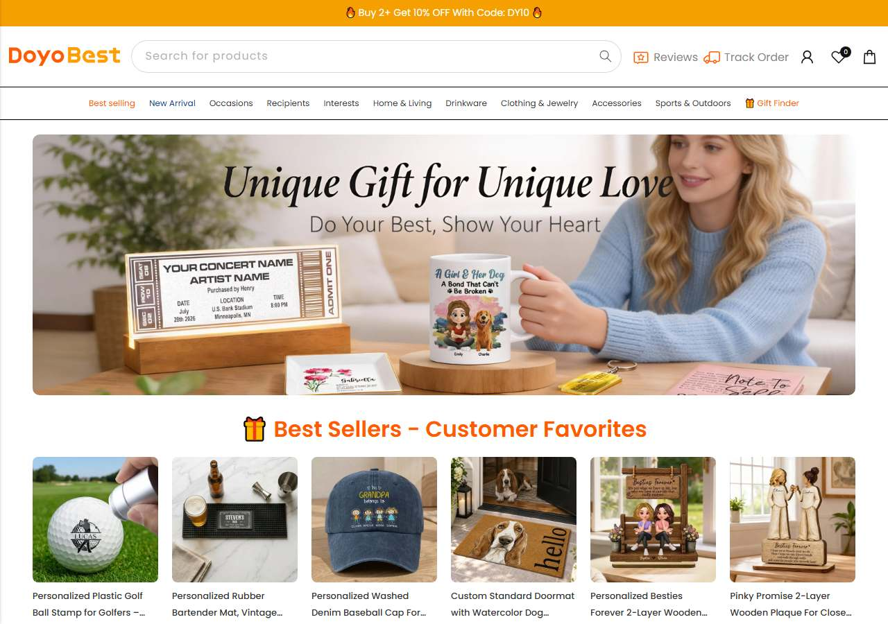
Vitrine de presentesmodelar: barra de desconto 2+ (DY10) e "Gift Finder"
MilaGiftMODELAR
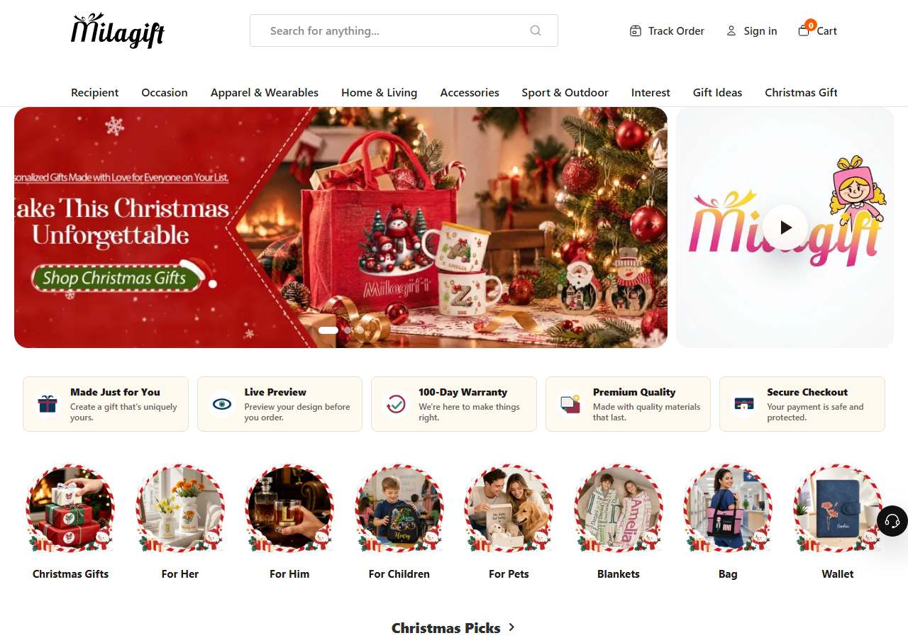
Promessa no topomodelar: "Made Just for You" e preview
Companion ArchiveOBSERVAR
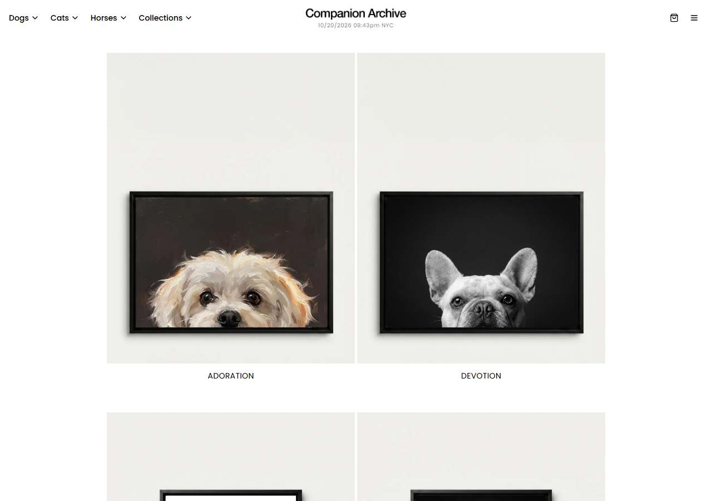
Identidade editorialmodelar: estilos com nome próprioevitar: "100,000 sold" sem prova
Turn Me RoyalOBSERVAR
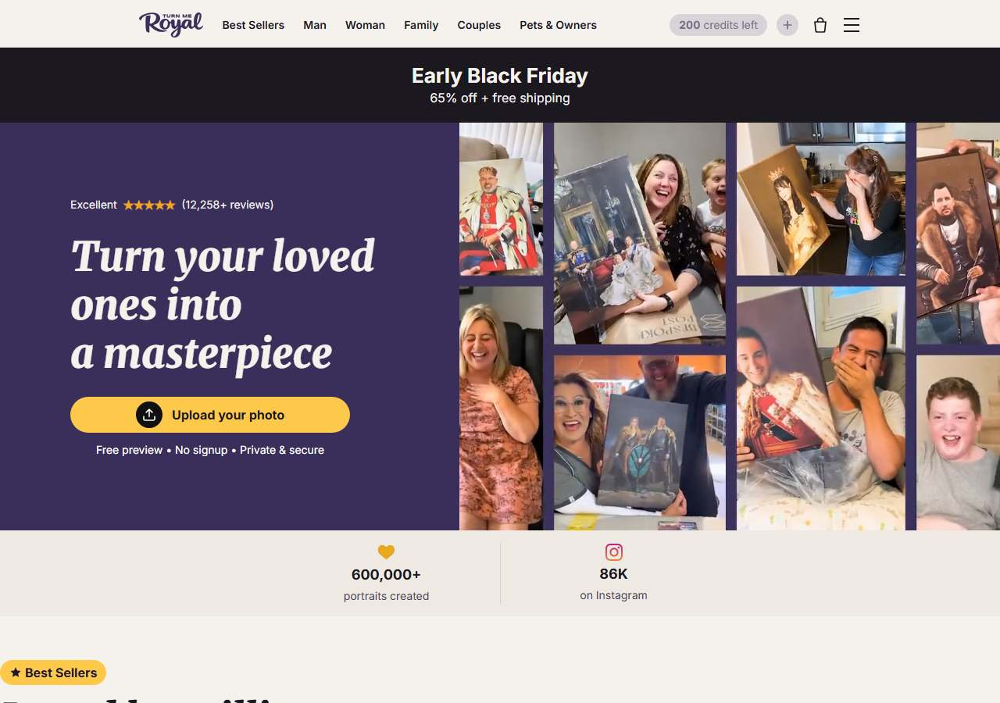
Upload sem cadastromodelar: "free preview, no signup"evitar: gerador próprio
Brushed Pawsblueprint
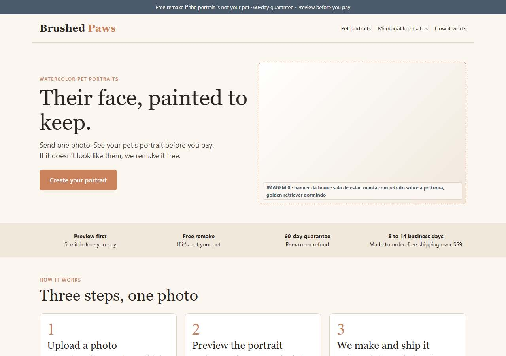
Um herói, uma promessamelhoria: preview + remake grátis no primeiro bloco
03Home no celular
DoyobestMODELAR
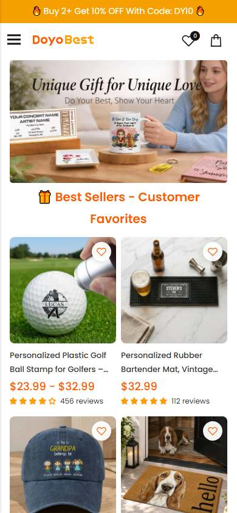
Vitrine de presentesmodelar: barra de desconto 2+ (DY10) e "Gift Finder"
MilaGiftMODELAR
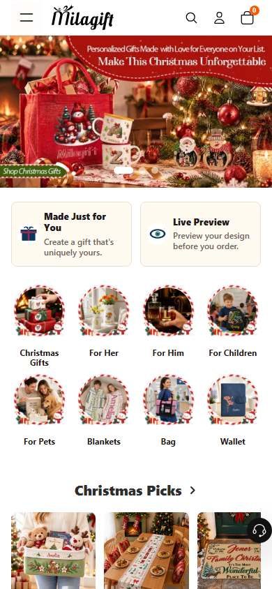
Promessa no topomodelar: "Made Just for You" e preview
Companion ArchiveOBSERVAR
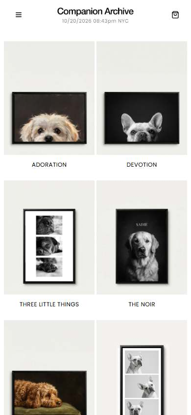
Identidade editorialmodelar: estilos com nome próprioevitar: "100,000 sold" sem prova
Turn Me RoyalOBSERVAR
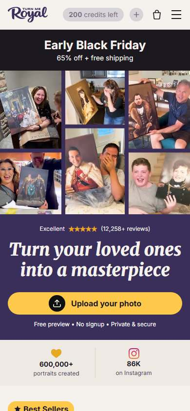
Upload sem cadastromodelar: "free preview, no signup"evitar: gerador próprio
Brushed Pawsblueprint
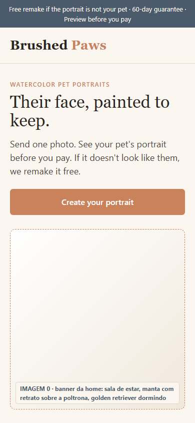
Um herói, uma promessamelhoria: preview + remake grátis no primeiro bloco
04Página do produto no computador
DoyobestMODELAR
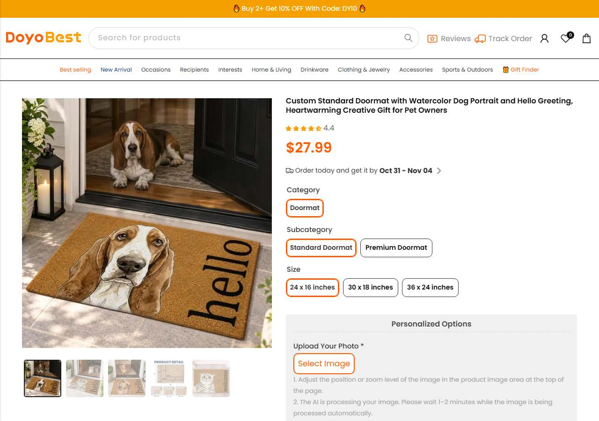
Calendário de entregamodelar: linha pedido, envio, entregaevitar: 104 imagens e 9,5 MB
MilaGiftMODELAR
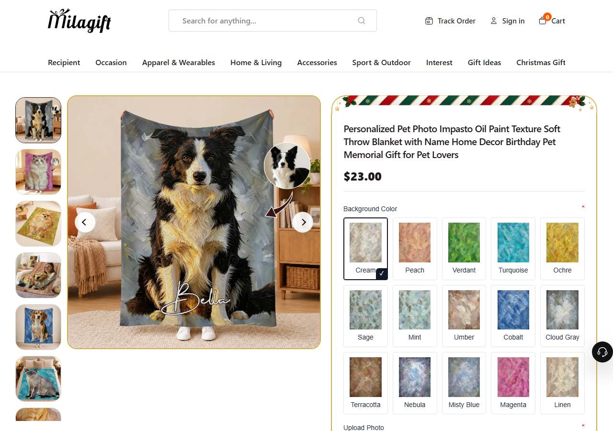
Página levemodelar: 100-day guarantee ao lado do botãoevitar: prazo não declarado
Companion ArchiveOBSERVAR
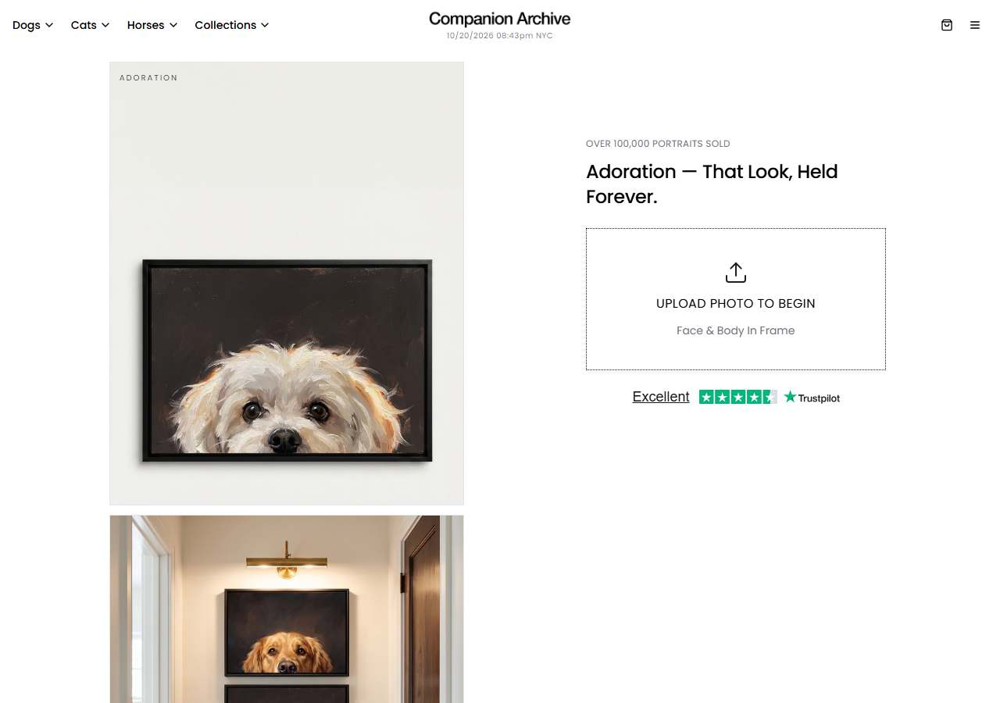
Fluxo por uploadmodelar: foto antes de tudoevitar: preço escondido até o upload
Turn Me RoyalOBSERVAR
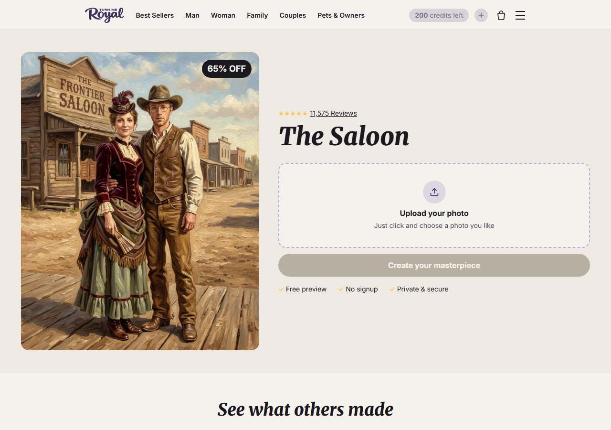
Estilos por galeriamodelar: poucos passos até o previewevitar: preço invisível
Brushed Pawsblueprint
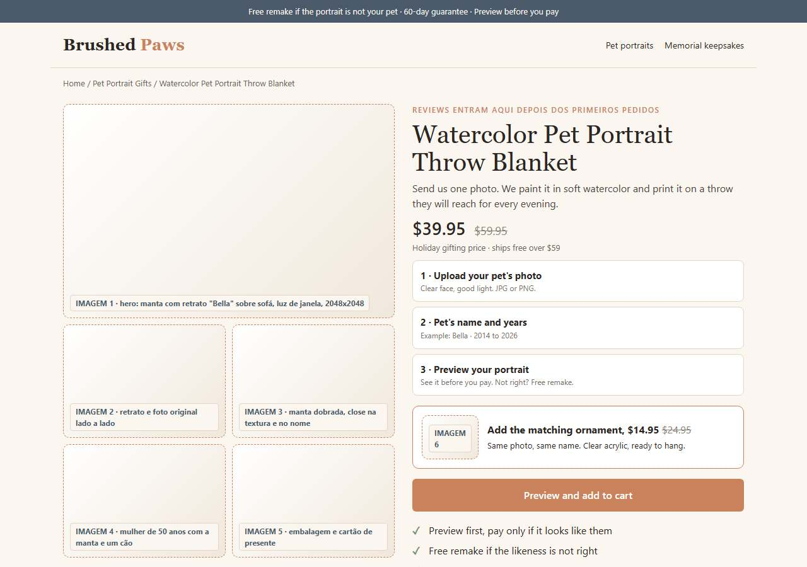
Personalizador acima da dobramelhoria: bump do ornamento e barra de compra no celular
05Página do produto no celular
DoyobestMODELAR
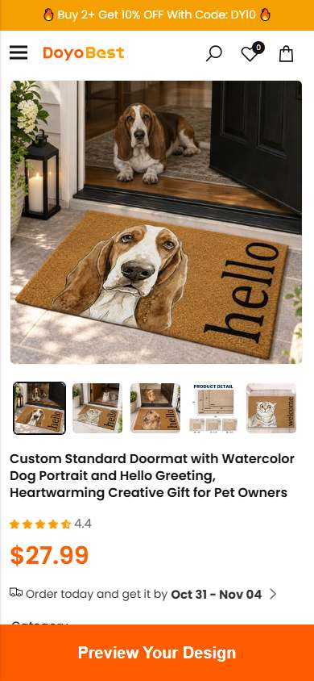
Calendário de entregamodelar: linha pedido, envio, entregaevitar: 104 imagens e 9,5 MB
MilaGiftMODELAR
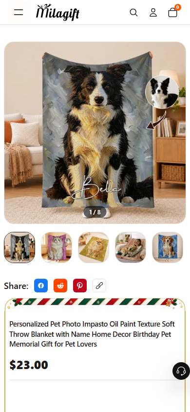
Página levemodelar: 100-day guarantee ao lado do botãoevitar: prazo não declarado
Companion ArchiveOBSERVAR
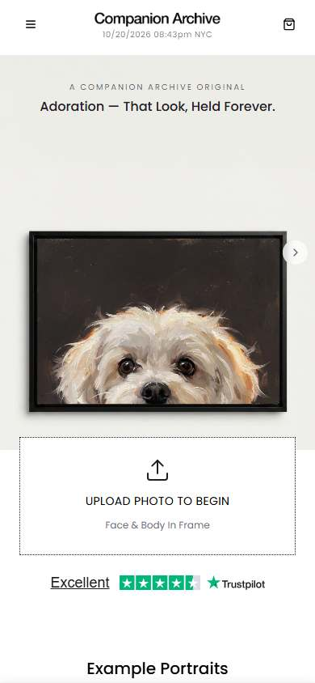
Fluxo por uploadmodelar: foto antes de tudoevitar: preço escondido até o upload
Turn Me RoyalOBSERVAR
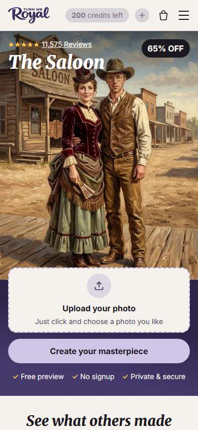
Estilos por galeriamodelar: poucos passos até o previewevitar: preço invisível
Brushed Pawsblueprint
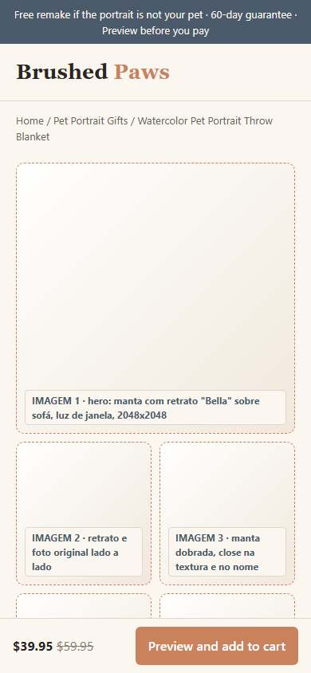
Personalizador acima da dobramelhoria: bump do ornamento e barra de compra no celular
06Leitura: o que cada uma ensina
Copiar e evitarO que copiar e o que evitar: a última coluna mostra o que a Brushed Paws copia de cada loja e o que ela evita. Em verde, copiar; as outras lojas servem de aviso.
Critério
Doyobest
MilaGift
Companion Archive
Turn Me Royal
Nossa direção
Promessa no topo
menu e vitrine de presentes
"Made Just for You" + preview
galeria de estilos com nome
"Upload your photo", free preview
"See it before you pay" (padrão do nicho) + remake grátis declarado
Prova e garantia
selos de entrega e qualidade
100-Day Guarantee
"lifetime reprint" no rodapé
"12.258+ reviews" (não verificado)
60 dias + remake grátis, sem número que não possamos provar
Prazo de entrega
calendário na PDP
não declarado
não declarado
7 a 11 dias úteis
calendário na PDP: 8 a 14 dias úteis
Complexidade
104 imagens na PDP
29 imagens, página leve
fluxo por upload
gerador por créditos
1 manta + 1 bump, 6 imagens
07Carregamento observado
Loja
Home até DOM
PDP até DOM
Requisições (PDP)
Peso PDP desktop
Peso PDP celular
Falhas
Doyobest
6,9 s
12,3 s
443
9,0 MB
7,2 MB
1
MilaGift
5,0 s
6,1 s
134
0,5 MB
0,3 MB
0
Companion Archive
7,3 s
5,1 s
95
3,3 MB
3,7 MB
0
Turn Me Royal
5,8 s
5,5 s
156
2,5 MB
2,5 MB
0
Brushed Paws (mockup)
0,9 s
0,8 s
1
0,0 MB
0,0 MB
0
LimiteÉ medição de laboratório (Playwright headless, uma passada, soma de content-length), não Core Web Vitals de campo. O mockup não tem as imagens finais da loja, então o peso dele é piso: a meta é manter a página de produto abaixo de 3 MB depois das fotos (a MilaGift fica em ~0,5 MB; a Doyobest em ~9,5 MB; a Pet Lovers Custom em ~20 MB).
08Auditoria de imagens
34
imagens de referência baixadas
em 5 produtos
observado
4 a 8
faixa de imagens por produto no nicho
carrosséis auditados
observado
0
fotos reais do produto
dependem da amostra
observado
0
conferências de produto pendentes
nenhuma referência de produto existe ainda
observado
Produto
Concorrente campeão
Carrossel real
Baixadas
Status
Watercolor Pet Portrait Throw Blanket
Doyobest
7
7
referência de cena baixada
Pet Memorial Acrylic Ornament
Doyobest
5
5
referência de cena baixada
Pet Memorial Ceramic Planter
Macorner
7
7
referência de cena baixada
Pet Name Keepsake Keychain
Doyobest
8
8
referência de cena baixada
Remembrance Gift Set (Blanket + Ornament)
Doyobest
7
7
referência de cena baixada
MétodoCada imagem baixada tem um prompt em inglês de 5 blocos em Identidade e imagens. A conferência de produto (bate/diverge) só roda quando existir foto real do fornecedor.
09Blueprint da sua loja monte a SUA assim
A planta visual da SUA loja: a home e a página de produto já desenhadas na identidade da marca Brushed Paws, com a copy em inglês americano nos lugares certos. É o layout para reproduzir no Shopify.
Como ler. Os blocos com fundo claro e um rótulo no canto (ex: "IMAGEM 1 · direção de arte") são onde entram as imagens. Todo o resto (textos, botões, preço, personalizador) já está no lugar final. A copy está em inglês porque o cliente é americano.
1 · Layout desktop · Home à esquerda, página de produto à direita
Como as duas páginas ficam no computador. É o mesmo site: o que muda no celular é só o empilhamento dos blocos. Role dentro de cada janela pra ver a página inteira.
2 · Layout celular a prioridade: 90% do tráfego é mobile
É aqui que o layout tem que estar impecável. 9 em cada 10 clientes veem a loja assim, no celular. Desenhe pensando primeiro nesta tela; o desktop é a consequência.
A ordem dos blocos não é estética, é psicológica. A home abre com a promessa (ver antes de pagar), mostra como funciona em 3 passos, e só depois a coleção: o cliente precisa acreditar no preview antes de escolher produto. Na página de produto o personalizador vem logo depois do preço, o ornamento aparece como bump e a barra de compra fica colada no rodapé no celular, onde está a maior parte do tráfego.
10Como validar o blueprint
Antes de construir
Peça a 5 pessoas do público (mulheres que têm cão ou gato) para olhar a home no celular por 5 segundos e dizer o que a loja vende e o que acontece depois de enviar a foto. Se 3 não souberem, ajuste a promessa do topo.
Antes de escalar
Só aumente o orçamento depois de 20 pedidos reais com o retrato aprovado na primeira versão em pelo menos 85% dos casos. Abaixo disso, o remake grátis come a margem.
LimiteO blueprint prova o layout, não a conversão. Conversão só aparece com tráfego real.
Próxima ação
Montar home e página de produto no celular conforme o blueprint